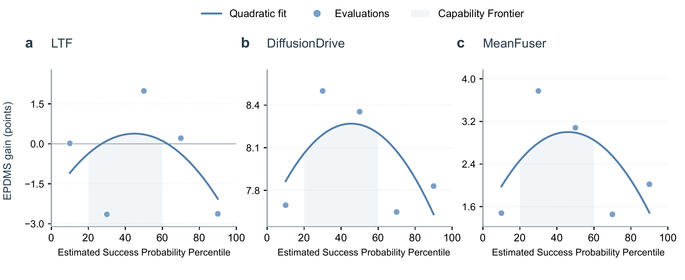
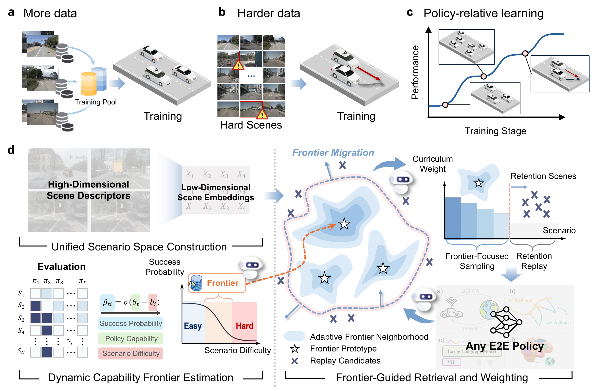
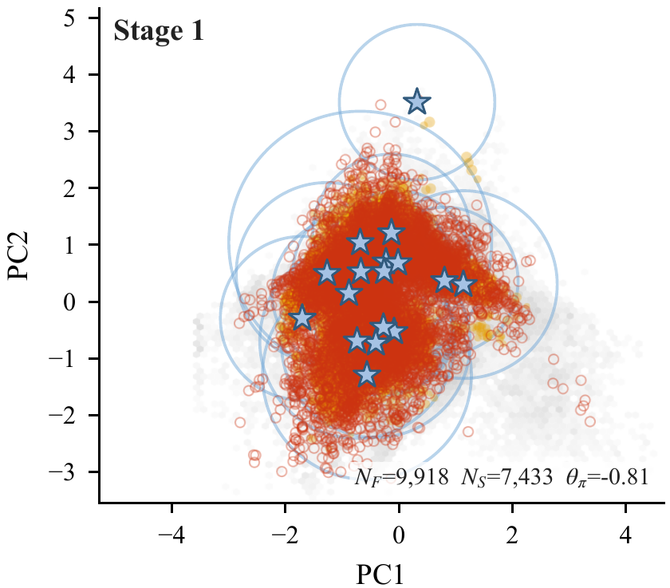
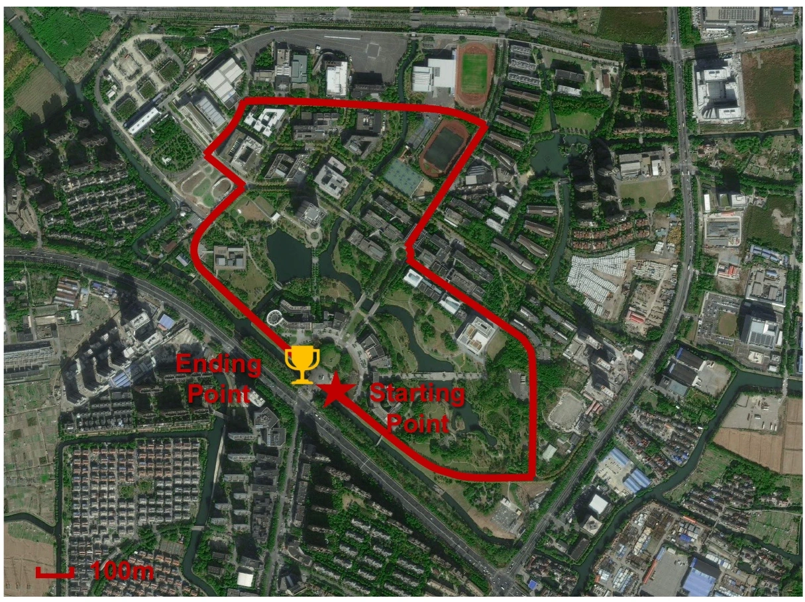
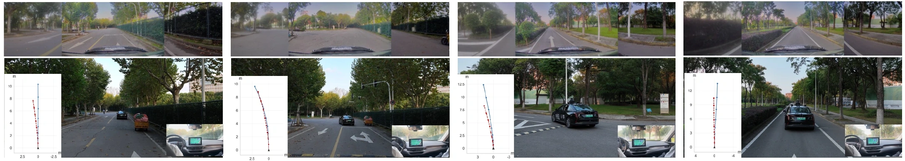

Capability Analyst
Interpret progress and identify the next learning opportunities.
Capability-aware self-learning
Find the experience that moves you forward.
Tongji University
A changing policy.
A moving frontier.
The learning principle
The value of a scene changes with the learner.
FrontierDrive finds experiences that are challenging and learnable for the current policy, then follows this frontier as capability grows.
Success-probability percentiles
Across three planner families, the strongest gains concentrate in this intermediate region of policy–scene compatibility.

Explore figureThree planner families. Independent ten-epoch updates. A shared frontier of useful experience.
The FrontierDrive loop
Evaluate. Locate. Retrieve. Learn.
Each policy update creates the evidence for the next.
Sequential scene-level evaluations separate policy capability from scene difficulty. Estimated success probabilities reveal the current frontier.
Capability meets scene difficulty.

Explore frameworkAgents turn capability evidence and cross-stage memory into the next training allocation.
Interpret progress and identify the next learning opportunities.
Connect frontier regions to their available training support.
Balance frontier learning with retention replay.
Verify the allocation before the next policy update.
Across planner families
Frontier-guided training improves regression, diffusion, and flow-matching planners on both evaluation sets.
EPDMS · Higher is better
Regression
Diffusion
Flow matching
Matched initialization and training budget within each planner.
Explore all resultsFrontierDrive leads Uniform, Random, Hard mining, and MOSAIC in the LTF comparison.
The frontier in motion
Follow DiffusionDrive through nine curriculum stages. New capability brings new training opportunities into reach.
Estimated policy capability
The first curriculum identifies broad frontier regions and retrieves their related training support.

Full evolutionFrom curriculum to control
The FrontierDrive-trained MeanFuser policy takes the wheel on a campus circuit in Shanghai.
Junctions, emerging road users, dense traffic, and nighttime driving bring the learned policy into real traffic interactions.
View the vehicle and complete sequences
Shanghai · Campus circuitThe policy adapts its planned path through the junction and continues along the outgoing road.

Enlarge sequenceKeep moving the frontier.
Explore FrontierDrive. Build the next curriculum.
Explore the code@misc{guo2026frontierdrive,
title = {Self-learning at the frontier of competence
in autonomous driving},
author = {Guo, Yicheng and Xu, Chengkai and Yan, Zhoudong
and Qin, Cheng and Lin, Hai and Fang, Shiyu
and Hang, Peng and Sun, Jian},
year = {2026},
url = {https://github.com/CCCC1dhcgd/FrontierDrive}
}